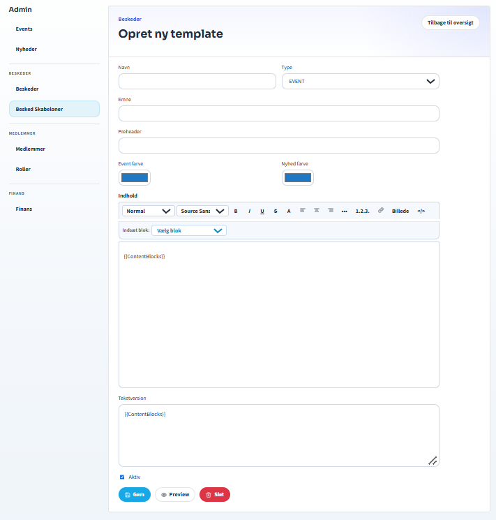

QA · Beskedskabeloner
Opret en beskedskabelon
Kræver: email_templates.edit.
- Åbn Admin → Beskedskabeloner, og vælg Opret ny.
- Angiv navn, type, emne og indhold.
- Hold skabelonen generel og uden følsomme data.
- Indsæt kun de understøttede blokke efter behov:
{{ContentBlocks}},{{EventBlocks}}eller{{NewsBlocks}}. - Markér skabelonen som aktiv, og vælg Gem.
- Vælg Forhåndsvisning, før skabelonen bruges til en besked.
